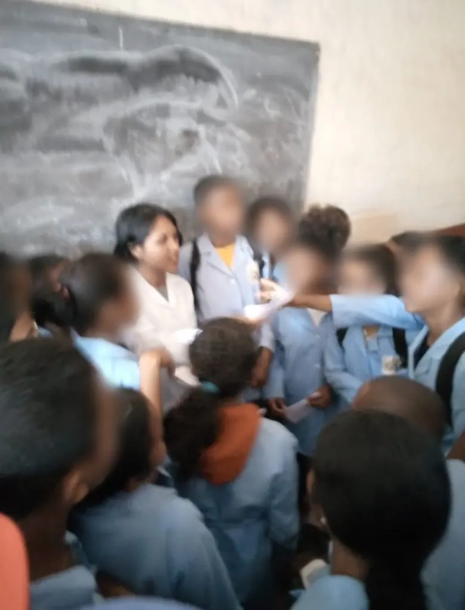
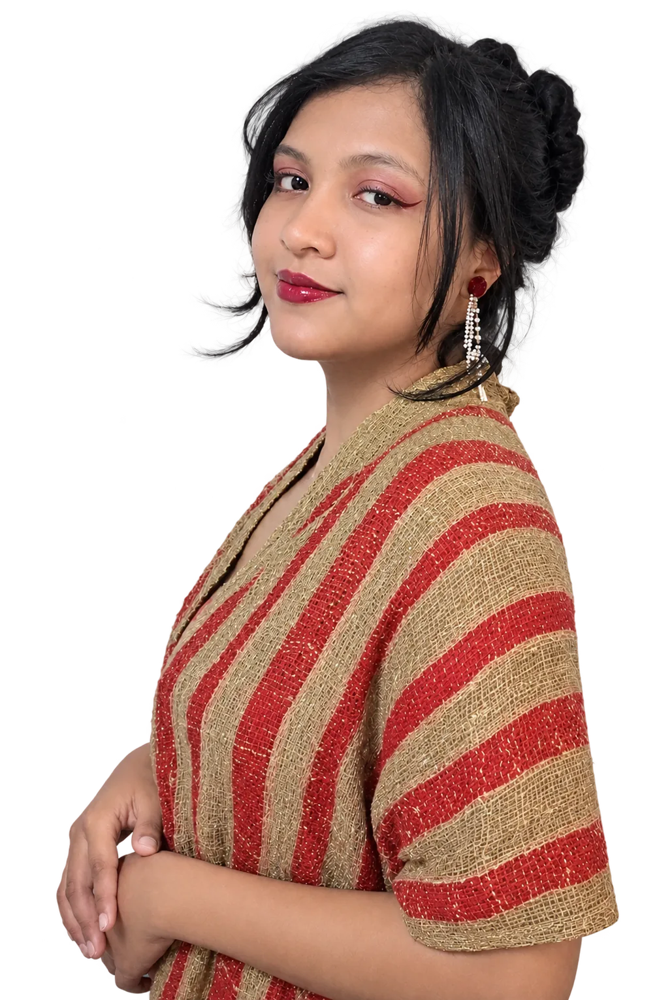
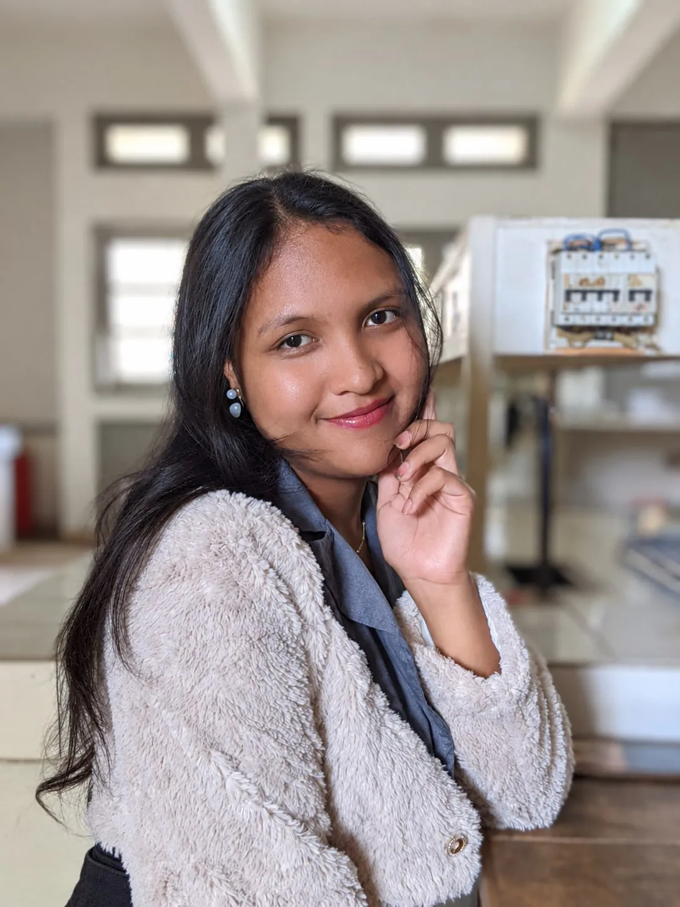
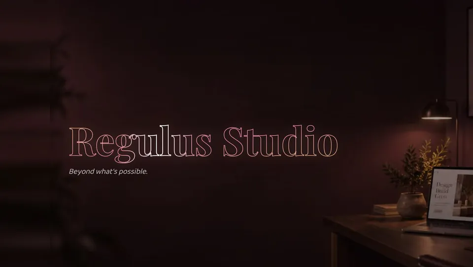
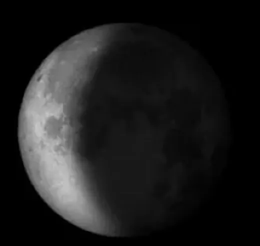

I
Enseignement
transmettre le savoir
Professeure de physique-chimie et passionnée de médiation scientifique : rendre la science vivante et accessible.
En savoir plusAstronome · Enseignante · Entrepreneure —
Étudiante en Master 2 d'astrophysique, j'analyse les données du ciel et je transmets la science à la prochaine génération.

Master 2
Astronomie & Astrophysique
DARA Alumni
Astronomie & Data
Enseignante
Physique-Chimie
Découverte
2 astéroïdes · Pan‑STARRS

Niriantsoa Francia Raheriniaina
Étudiante en Master 2 d'Astronomie et Astrophysique à l'Université d'Antananarivo, formée en astronomie et traitement de données astronomiques par le programme Development in Africa with Radio Astronomy (DARA) et professeure de physique-chimie, je relie la salle de classe, le ciel et l'entreprise. Curieuse, rigoureuse et audacieuse, je m'intéresse aujourd'hui à l'apport du machine learning à l'astronomie. Mon ambition : poursuivre un doctorat en astronomie et astrophysique et contribuer au développement scientifique de notre continent.
« Plus je sais, plus je me rends compte que je ne sais rien. »— d'après Socrate
✦ I · II · III
Trois domaines qui se nourrissent l'un l'autre : transmettre, chercher et créer.

I
transmettre le savoir
Professeure de physique-chimie et passionnée de médiation scientifique : rendre la science vivante et accessible.
En savoir plusII
lire dans les étoiles
Master 2 en astronomie et astrophysique, formation DARA, projets Python et recherche d'astéroïdes.
En savoir plus
III
créer et innover
Fondatrice de Regulus Studio, agence web sur mesure, et de projets mêlant science, éducation et tech.
En savoir plusPhoto du ciel : Phil Botha / Unsplash
✦ Recherche · Code · Entreprise
Cheffe d'une équipe de 4 : 2 astéroïdes candidats provisoires identifiés sur des images Pan-STARRS. Travail reconnu par le Pan-STARRS Institute (Université d'Hawaï), soutenu par la NASA.

Application qui calcule la phase, l'illumination et l'âge de la Lune pour n'importe quelle date, avec une version web et une Lune 3D interactive.
Génération de signaux, transformée de Fourier rapide, filtrage et reconstruction, avec une application à la détection de la période d'étoiles variables.
Exploration de catalogues de galaxies, courbes de lumière, évolution stellaire et rayonnement du corps noir à partir de données réelles et simulées.
Nettoyage (ETL) et analyse exploratoire (EDA) de 1 000 films pour répondre à des questions clés : notes, recettes, réalisateurs, acteurs.
Plateforme d'étude de fonctions : on saisit f(x) et on obtient l'étude complète (domaine, dérivée, variations, tangente, courbe, primitive, aire), avec le raisonnement détaillé.
Mon agence de développement web sur mesure pour les PME : sites vitrines, landing pages et applications, pensés à l'image de chaque client.
Boutique en ligne pour artisans et petits commerçants : catalogue, panier, commande avec paiement à la livraison, suivi par lien et tableau de bord commerçant.
Plateforme de gestion de restaurant : plan de salle, prise de commande, écran cuisine, encaissement, stock, recettes et personnel.
Présentation interactive sur la physique du Soleil pour 30 jeunes scouts, et ateliers du samedi (4 semaines, 10 élèves) avec la Malagasy Astronomical Society (MASS), à partir de matériel local et peu coûteux.
Participante à l'Annual Network Meeting du programme DARA (Afrique du Sud, mars 2026) et à l'atelier TART Madagascar (juin 2026), qui a installé le premier radiotélescope TART du pays.
Faites défiler pour voir tous les projets →